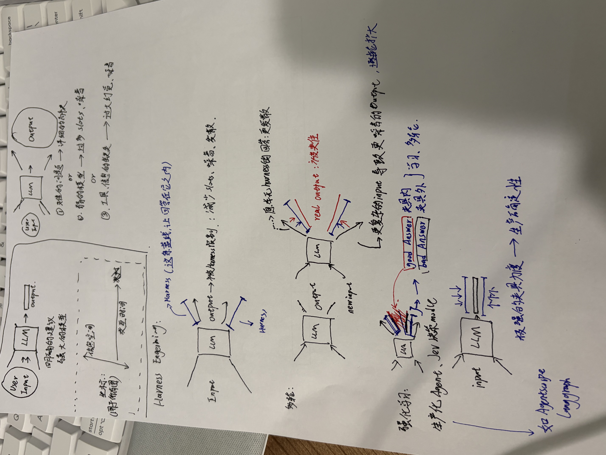

Harness
Engineering
· 概念阐释
以「User Input → LLM → Output」图为中心的动画 · 还原手写白板
信息空间
交互时间
坐标（俯瞰图）
User
Input
LLM
Harness：这条蓝线，让回答在它之内
output → new input
评估 / 决策模块
Good Answer ✓ 夹具内
Bad Answer ✗ 夹具外
外部脚本 / 图（AgentScript、LangGraph）
harness 强度光谱
裸调用
提示·格式
工具·校验
代理循环·评估
脚本·图
自由度↑ 上限↑ 风险↑
确定性↑ 灵活↓
明确的建议 + 强大的模型，就够了吗？
① 难的问题 → 详细的解决方案
② 复杂的模型 → 过多 slots、噪音
③ 工具、信息的缺失 → 过大幻觉、噪音
俯瞰：每种 harness 都在这张地图上圈定可行域
Output 被 Harness 限制：减少 slots、噪音、发散
real output = 可能性（分布）
更复杂的 input → 更噪音的 output，逐轮扩大
夹具内 / 夹具外 → 学习、多轮修正
坏分支标红打回重试，好分支放行
极强的夹具力度 → 生产稳定性
代价：灵活性与上限受脚本约束
为任务在光谱上选点，并设计那条蓝线
Harness
Engineering
模型包含智能，harness 让智能可用 —— 以 LLM 输入/输出图为中心的动画阐释
问题：发散·噪音·幻觉
蓝线：让回答在它之内
多轮：发散会复利
反馈：Good / Bad Answer
固化：脚本与图
← → 或空格翻页 · 圆点跳转 · A 自动播放
旋转 90°
手写白板原图（本演示所还原的底稿）

（未找到 origin.jpg：请将手写白板原图放在本文件同目录）